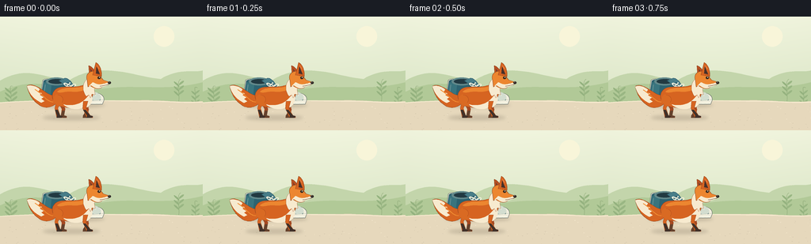
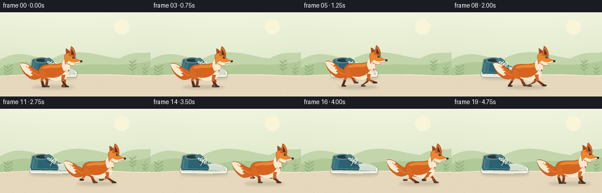

CODING AGENTS AS PIXEL WORLD MODELS
traex/GPT-6.1-Sol · dynamic_spatial_relationship_0027
点击播放 · 原生 RGB 像素
逐轮保存的候选
回放视频、检查图与代码变化。
每份候选均可单独播放。实际图片检查记录在下方工具轨迹中。
候选 01播放与检查图
点击播放 · 原生 RGB 像素


展开代码变化
--- 上一保存版本
+++ 本次保存版本
@@ -0,0 +1,178 @@
+from pathlib import Path
+import math
+import numpy as np
+from PIL import Image, ImageDraw, ImageFilter
+import artifact_io
+
+ROOT = Path(__file__).resolve().parent
+W,H,S = 256,144,4
+
+def path(points):
+ # Bezier path, sampled in image space for clean antialiased contours.
+ out=[]; pos=None
+ for p in points:
+ if p[0]=='M': pos=(p[1],p[2]); out.append(pos)
+ elif p[0]=='L': pos=(p[1],p[2]); out.append(pos)
+ elif p[0]=='C':
+ start=pos; a=(p[1],p[2]); b=(p[3],p[4]); end=(p[5],p[6])
+ for t in np.linspace(0,1,19)[1:]:
+ q=1-t
+ out.append((q**3*start[0]+3*q*q*t*a[0]+3*q*t*t*b[0]+t**3*end[0],q**3*start[1]+3*q*q*t*a[1]+3*q*t*t*b[1]+t**3*end[1]))
+ pos=end
+ return out
+
+class Art:
+ def __init__(self, im, x=0,y=0): self.im=im; self.d=ImageDraw.Draw(im); self.x=x;self.y=y
+ def p(self,p): return ((p[0]+self.x)*S,(p[1]+self.y)*S)
+ def shape(self, commands, fill, outline=None,width=0.5):
+ pts=[self.p(p) for p in path(commands)]
+ self.d.polygon(pts,fill=fill)
+ if outline:self.d.line(pts+[pts[0]],fill=outline,width=max(1,int(width*S)),joint='curve')
+ def line(self, pts,fill,width=1): self.d.line([self.p(p) for p in pts], fill=fill,width=max(1,int(width*S)),joint='curve')
+ def curve(self,commands,fill,width=1):self.line(path(commands),fill,width)
+ def ellipse(self,box,fill,outline=None,width=1):
+ self.d.ellipse([self.p(box[:2]),self.p(box[2:])],fill,outline,width=max(1,int(width*S)))
+
+# Warm paper-like daylight, distant greenery, stone foreground.
+yy,xx=np.mgrid[0:H*S,0:W*S]
+yf=yy/(H*S); xf=xx/(W*S)
+base=np.zeros((H*S,W*S,3),dtype=float)
+for k,(top,bot) in enumerate(zip((239,243,220),(213,226,193))):base[:,:,k]=top*(1-yf)+bot*yf
+base += (2*np.sin(xf*math.pi))[...,None]
+background=Image.fromarray(np.uint8(np.clip(base,0,255)))
+a=Art(background)
+a.ellipse((194,12,220,38),(248,245,217))
+a.shape([('M',0,81),('C',32,63,52,75,85,82),('C',128,54,172,77,203,79),('C',227,64,247,72,256,68),('L',256,117),('L',0,117)],(195,213,171))
+a.shape([('M',0,95),('C',47,74,72,92,108,95),('C',164,82,205,97,256,83),('L',256,115),('L',0,115)],(177,201,151))
+# Atmospheric shrubs, a few restrained leaf silhouettes.
+for cx,cy,sc in [(13,88,1),(225,79,.8),(246,90,.65)]:
+ a.curve([('M',cx,110),('C',cx+4,99,cx-4,86,cx+3,cy)],(139,167,118),.7)
+ for j in range(3):
+ ly=cy+8+j*6
+ a.shape([('M',cx+1,ly),('C',cx-8*sc,ly-10*sc,cx-11*sc,ly-6*sc,cx+1,ly+2)],(148,178,127))
+ a.shape([('M',cx+1,ly-2),('C',cx+11*sc,ly-12*sc,cx+12*sc,ly-5*sc,cx+1,ly)],(153,182,131))
+a.shape([('M',0,109),('C',67,103,122,107,174,106),('C',202,105,233,110,256,107),('L',256,144),('L',0,144)],(230,216,188))
+a.curve([('M',0,109),('C',76,104,135,107,174,107),('C',215,107,238,110,256,108)],(247,234,207),1.3)
+# Gravel flecks, fixed throughout the animation.
+rng=np.random.default_rng(18)
+for _ in range(85):
+ x=float(rng.uniform(0,256));y=float(rng.uniform(113,144)); r=float(rng.uniform(.25,.65))
+ a.ellipse((x-r,y-r*.4,x+r,y+r*.4),(210,197,171) if _%3 else (243,230,204))
+
+# soft contact shadows
+def shadow(im,x,y,rx,ry,alpha):
+ lay=Image.new('RGBA',im.size)
+ d=ImageDraw.Draw(lay);d.ellipse(((x-rx)*S,(y-ry)*S,(x+rx)*S,(y+ry)*S),fill=(69,61,45,alpha))
+ lay=lay.filter(ImageFilter.GaussianBlur(2*S))
+ im.paste(lay,(0,0),lay)
+
+# Shoe: a recognizable teal-blue canvas low-top sneaker, resting behind the fox.
+def shoe(im):
+ shadow(im,91,112,41,3,47)
+ a=Art(im)
+ a.shape([('M',51,101),('L',54,81),('C',55,78,65,78,69,81),('L',91,86),('C',97,92,109,95,119,96),('C',128,97,132,101,131,106),('L',129,111),('L',54,111),('C',50,110,49,106,51,101)],(241,238,221),(88,99,96),.65)
+ # upper and rounded toe
+ a.shape([('M',52,100),('L',55,82),('C',57,78,66,80,71,82),('L',86,84),('C',93,85,95,91,103,93),('C',108,95,117,94,122,97),('C',127,99,128,103,126,106),('L',53,105)],(45,99,113),(42,79,90),.7)
+ a.shape([('M',96,94),('C',108,93,120,93,126,99),('C',128,102,128,104,125,106),('L',98,105),('C',102,100,98,98,96,94)],(211,221,207))
+ a.curve([('M',102,96),('C',110,95,118,97,121,100)],(245,245,224),.8)
+ # heel counter / blue highlights
+ a.shape([('M',55,83),('L',65,85),('L',63,104),('L',53,104)],(57,116,126))
+ a.curve([('M',57,86),('L',55,101),('L',66,102),('C',78,103,89,103,98,102)],(139,170,166),.7)
+ # collar opening, soft raised rim, tongue
+ a.ellipse((58,77,84,87),(98,137,139))
+ a.ellipse((61,79,82,85),(34,58,66))
+ a.shape([('M',74,81),('L',81,78),('C',85,77,89,81,92,86),('L',99,95),('L',91,97),('L',82,87)],(72,125,136),(40,84,100),.5)
+ a.shape([('M',82,84),('L',87,83),('L',97,96),('L',89,99),('L',80,89)],(37,87,102))
+ # metal lace eyelets and crossed cotton laces
+ for j in range(4):
+ x=81+j*3.5;y=85+j*2.8
+ a.ellipse((x-1,y-1,x+1,y+1),(193,214,206))
+ a.ellipse((x+7-1,y-2,x+7+1,y),(193,214,206))
+ a.line([(x,y),(x+8,y+1.6)],(246,242,220),1.1)
+ if j<3:a.line([(x+7,y-1),(x+3.5,y+2.8)],(241,237,215),.9)
+ a.curve([('M',88,90),('C',78,87,80,82,85,85),('C',89,87,90,89,88,90),('C',94,81,100,87,90,91)],(247,243,224),1)
+ a.line([(89,91),(85,97)],(244,242,222),.9)
+ a.curve([('M',51,106),('C',79,108,110,108,130,105)],(165,176,158),.65)
+ a.curve([('M',53,109),('C',77,111,110,111,128,109)],(255,251,232),1)
+ for x in range(57,128,5):a.line([(x,110),(x,111)],(152,166,151),.4)
+
+ORANGE=(214,100,33); LIGHT=(236,134,48); DARK=(65,49,41); EDGE=(144,69,31); WHITE=(247,234,207)
+
+def limb(a,hip,foot,front,phase):
+ # articulated quadruped limb: hock/elbow angles vary with the stride
+ hx,hy=hip;fx,fy=foot
+ knee=(hx+(fx-hx)*.35 + (-3 if front else 3),hy+9)
+ pts=[(hx-3,hy),(hx+3,hy),(knee[0]+2.2,knee[1]),(fx+1.8,fy-2),(fx+5,fy-1),(fx+5,fy+1),(fx-2.5,fy+1),(knee[0]-2,knee[1])]
+ a.shape([('M',*pts[0])]+[('L',*p) for p in pts[1:]],ORANGE if front else (165,73,33),EDGE,.35)
+ a.shape([('M',knee[0]-1.5,knee[1]+2),('L',knee[0]+1.8,knee[1]+2),('L',fx+1.8,fy-2),('L',fx+5,fy-1),('C',fx+6,fy+1.3,fx+2,fy+1.5,fx-2.5,fy+1),('L',fx-2.2,fy-2)],DARK if front else (101,66,45))
+
+def fox(im,x,running,phase,t):
+ bob=(-1.7*math.sin(phase*2)) if running else 0
+ y=104+bob
+ shadow(im,x,128,36 if not running else 34,3.1,45)
+ a=Art(im,x,y)
+ # Full bushy tapering tail swept behind the body, with ivory tip.
+ lift=2.6*math.sin(phase) if running else .7*math.sin(t*1.5)
+ tail=[('M',-18,-4),('C',-29,-2,-35,-13+lift,-48,-17+lift),('C',-52,-18+lift,-55,-17+lift,-56,-16+lift),('C',-55,-10+lift,-51,0+lift,-43,6+lift),('C',-34,14+lift,-23,11,-17,4)]
+ a.shape(tail,ORANGE,EDGE,.5)
+ a.shape([('M',-56,-16+lift),('C',-51,-18+lift,-44,-16+lift,-40,-12+lift),('L',-42,-9+lift),('L',-37,-7+lift),('L',-40,-5+lift),('L',-35,-2+lift),('L',-38,0+lift),('L',-34,3+lift),('L',-38,5+lift),('C',-49,0+lift,-54,-9+lift,-56,-16+lift)],WHITE)
+ a.curve([('M',-46,-12+lift),('C',-36,-6+lift,-31,4,-23,4)],(241,142,51),1.2)
+ # Far side legs behind body.
+ def feet(hip,off):
+ if not running:return hip+off,23-bob
+ ph=phase+off
+ return hip+12*math.cos(ph),22-bob-9*max(0,math.sin(ph))
+ hf=feet(-14,math.pi);ff=feet(17,0)
+ limb(a,(-14,4),hf,False,phase);limb(a,(17,5),ff,False,phase)
+ # Torso with gently swept dorsal line, raised shoulder.
+ a.shape([('M',-23,1),('C',-26,-7,-21,-15,-10,-15),('C',2,-15,11,-15,20,-19),('C',27,-18,30,-9,25,1),('C',21,13,7,14,-6,11),('C',-14,10,-20,10,-23,1)],ORANGE,EDGE,.6)
+ a.shape([('M',-18,-9),('C',-8,-17,5,-11,20,-17),('C',20,-11,12,-8,1,-9),('C',-7,-10,-15,-6,-18,-9)],LIGHT)
+ a.shape([('M',-10,7),('C',0,10,13,7,19,-1),('L',24,-7),('C',28,-2,27,6,22,9),('L',20,11),('L',16,9),('L',13,12),('C',6,15,-6,12,-10,7)],WHITE)
+ # Near side legs with cadence different from far legs.
+ hf=feet(-16,0);ff=feet(18,math.pi)
+ if not running:hf=(-16,23);ff=(22,23)
+ limb(a,(-16,3),hf,True,phase);limb(a,(18,3),ff,True,phase)
+ # Round haunch blends into the top of the hind leg.
+ a.shape([('M',-20,-5),('C',-26,1,-22,7,-16,9),('L',-12,9),('C',-7,0,-13,-7,-20,-5)],(217,106,35))
+ a.curve([('M',-17,-5),('C',-11,-4,-9,1,-12,5)],(183,81,29),.6)
+ # White neck ruff.
+ a.shape([('M',20,-25),('C',13,-19,14,-9,19,-3),('L',22,-5),('L',24,-1),('L',26,-6),('L',30,-5),('L',29,-12),('L',33,-17),('L',29,-26)],WHITE,EDGE,.35)
+ # Far ear.
+ a.shape([('M',23,-27),('L',22,-42),('C',26,-41,31,-35,32,-28)],(185,79,33),EDGE,.55)
+ a.shape([('M',24,-38),('L',26,-29),('L',29,-30)],(84,58,48))
+ # Head, long narrow muzzle, black nose.
+ a.shape([('M',20,-24),('C',18,-30,22,-35,29,-35),('C',35,-34,37,-27,40,-24),('L',49,-21),('C',49,-18,43,-16,39,-15),('C',36,-11,28,-12,24,-17),('L',21,-15)],LIGHT,EDGE,.6)
+ # Prominent triangular near ear.
+ a.shape([('M',27,-30),('L',31,-46),('C',36,-43,39,-35,38,-28)],ORANGE,EDGE,.7)
+ a.shape([('M',31.8,-41),('L',31,-32),('L',36,-31)],(70,49,42))
+ a.line([(32,-42),(35,-38)],(235,155,101),.6)
+ # cream cheek and jaw continue into pointed snout
+ a.shape([('M',27,-21),('C',31,-19,35,-17,40,-19),('L',48,-21),('C',49,-18,44,-16,39,-15),('C',34,-11,29,-14,25,-17),('L',22,-16)],WHITE)
+ a.curve([('M',36,-16),('C',40,-16,44,-18,47,-18)],(83,54,38),.6)
+ a.ellipse((46,-22,50,-18.7),(48,42,39))
+ a.ellipse((47,-21.6,48.4,-20.6),(120,108,91))
+ # Eye, eyebrow, and subtle whisker points.
+ blink=(not running and t>4.3 and t<4.65)
+ if blink:a.line([(33,-26),(37,-25.8)],(55,43,32),.8)
+ else:
+ a.ellipse((33,-28.2,37,-25),(57,42,30))
+ a.ellipse((35,-27.7,36,-26.7),(255,246,215))
+ a.curve([('M',32,-30),('C',34,-30.8,36,-30.6,37,-29)],(166,77,29),.6)
+ for wx,wy in [(40,-20),(42,-19.5),(38.5,-19)]:a.ellipse((wx,wy,wx+.45,wy+.45),(128,102,72))
+
+frames=[]
+for i in range(20):
+ t=i/4
+ if i<4:x=90;running=False;p=0
+ elif i<17:
+ u=(i-3)/13
+ # Nearly uniform traverse, gently easing in and out.
+ v=u*u*(3-2*u)
+ x=90+111*v;running=True;p=(i-3)*1.9
+ else:x=201;running=False;p=0
+ im=background.copy()
+ shoe(im)
+ fox(im,x,running,p,t)
+ frames.append(np.asarray(im.resize((W,H),Image.Resampling.LANCZOS).convert('RGB')))
+artifact_io.save(np.stack(frames).astype(np.uint8),ROOT)
+print('Saved 20 RGB frames at 256x144, 4 fps.')
可观测工具轨迹
实际执行的命令与返回图片。
命令 1exit 0
/bin/bash -lc 'ls -la && cat prompt.txt && cat GENERATION_RULES.md && cat task_spec.json'
命令 2exit 0
/bin/bash -lc "cat artifact_io.py && python - <<'PY'
import PIL, numpy
print('PIL and numpy available')
PY"命令 3exit 0
/bin/bash -lc "cat > generate.py <<'PY'
from pathlib import Path
import math
import numpy as np
from PIL import Image, ImageDraw, ImageFilter
import artifact_io
ROOT = Path(__file__).resolve().parent
W,H,S = 256,144,4
def path(points):
# Bezier path, sampled in image space for clean antialiased contours.
out=[]; pos=None
for p in points:
if p[0]=='M': pos=(p[1],p[2]); out.append(pos)
elif p[0]=='L': pos=(p[1],p[2]); out.append(pos)
elif p[0]=='C':
start=pos; a=(p[1],p[2]); b=(p[3],p[4]); end=(p[5],p[6])
for t in np.linspace(0,1,19)[1:]:
q=1-t
out.append((q**3*start[0]+3*q*q*t*a[0]+3*q*t*t*b[0]+t**3*end[0],q**3*start[1]+3*q*q*t*a[1]+3*q*t*t*b[1]+t**3*end[1]))
pos=end
return out
class Art:
def __init__(self, im, x=0,y=0): self.im=im; self.d=ImageDraw.Draw(im); self.x=x;self.y=y
def p(self,p): return ((p[0]+self.x)*S,(p[1]+self.y)*S)
def shape(self, commands, fill, outline=None,width=0.5):
pts=[self.p(p) for p in path(commands)]
self.d.polygon(pts,fill=fill)
if outline:self.d.line(pts+[pts[0]],fill=outline,width=max(1,int(width*S)),joint='curve')
def line(self, pts,fill,width=1): self.d.line([self.p(p) for p in pts], fill=fill,width=max(1,int(width*S)),joint='curve')
def curve(self,commands,fill,width=1):self.line(path(commands),fill,width)
def ellipse(self,box,fill,outline=None,width=1):
self.d.ellipse([self.p(box[:2]),self.p(box[2:])],fill,outline,width=max(1,int(width*S)))
# Warm paper-like daylight, distant greenery, stone foreground.
yy,xx=np.mgrid[0:H*S,0:W*S]
yf=yy/(H*S); xf=xx/(W*S)
base=np.zeros((H*S,W*S,3),dtype=float)
for k,(top,bot) in enumerate(zip((239,243,220),(213,226,193))):base[:,:,k]=top*(1-yf)+bot*yf
base += (2*np.sin(xf*math.pi))[...,None]
background=Image.fromarray(np.uint8(np.clip(base,0,255)))
a=Art(background)
a.ellipse((194,12,220,38),(248,245,217))
a.shape([('M',0,81),('C',32,63,52,75,85,82),('C',128,54,172,77,203,79),('C',227,64,247,72,256,68),('L',256,117),('L',0,117)],(195,213,171))
a.shape([('M',0,95),('C',47,74,72,92,108,95),('C',164,82,205,97,256,83),('L',256,115),('L',0,115)],(177,201,151))
# Atmospheric shrubs, a few restrained leaf silhouettes.
for cx,cy,sc in [(13,88,1),(225,79,.8),(246,90,.65)]:
a.curve([('M',cx,110),('C',cx+4,99,cx-4,86,cx+3,cy)],(139,167,118),.7)
for j in range(3):
ly=cy+8+j*6
a.shape([('M',cx+1,ly),('C',cx-8*sc,ly-10*sc,cx-11*sc,ly-6*sc,cx+1,ly+2)],(148,178,127))
a.shape([('M',cx+1,ly-2),('C',cx+11*sc,ly-12*sc,cx+12*sc,ly-5*sc,cx+1,ly)],(153,182,131))
a.shape([('M',0,109),('C',67,103,122,107,174,106),('C',202,105,233,110,256,107),('L',256,144),('L',0,144)],(230,216,188))
a.curve([('M',0,109),('C',76,104,135,107,174,107),('C',215,107,238,110,256,108)],(247,234,207),1.3)
# Gravel flecks, fixed throughout the animation.
rng=np.random.default_rng(18)
for _ in range(85):
x=float(rng.uniform(0,256));y=float(rng.uniform(113,144)); r=float(rng.uniform(.25,.65))
a.ellipse((x-r,y-r*.4,x+r,y+r*.4),(210,197,171) if _%3 else (243,230,204))
# soft contact shadows
def shadow(im,x,y,rx,ry,alpha):
lay=Image.new('RGBA',im.size)
d=ImageDraw.Draw(lay);d.ellipse(((x-rx)*S,(y-ry)*S,(x+rx)*S,(y+ry)*S),fill=(69,61,45,alpha))
lay=lay.filter(ImageFilter.GaussianBlur(2*S))
im.paste(lay,(0,0),lay)
# Shoe: a recognizable teal-blue canvas low-top sneaker, resting behind the fox.
def shoe(im):
shadow(im,91,112,41,3,47)
a=Art(im)
a.shape([('M',51,101),('L',54,81),('C',55,78,65,78,69,81),('L',91,86),('C',97,92,109,95,119,96),('C',128,97,132,101,131,106),('L',129,111),('L',54,111),('C',50,110,49,106,51,101)],(241,238,221),(88,99,96),.65)
# upper and rounded toe
a.shape([('M',52,100),('L',55,82),('C',57,78,66,80,71,82),('L',86,84),('C',93,85,95,91,103,93),('C',108,95,117,94,122,97),('C',127,99,128,103,126,106),('L',53,105)],(45,99,113),(42,79,90),.7)
a.shape([('M',96,94),('C',108,93,120,93,126,99),('C',128,102,128,104,125,106),('L',98,105),('C',102,100,98,98,96,94)],(211,221,207))
a.curve([('M',102,96),('C',110,95,118,97,121,100)],(245,245,224),.8)
# heel counter / blue highlights
a.shape([('M',55,83),('L',65,85),('L',63,104),('L',53,104)],(57,116,126))
a.curve([('M',57,86),('L',55,101),('L',66,102),('C',78,103,89,103,98,102)],(139,170,166),.7)
# collar opening, soft raised rim, tongue
a.ellipse((58,77,84,87),(98,137,139))
a.ellipse((61,79,82,85),(34,58,66))
a.shape([('M',74,81),('L',81,78),('C',85,77,89,81,92,86),('L',99,95),('L',91,97),('L',82,87)],(72,125,136),(40,84,100),.5)
a.shape([('M',82,84),('L',87,83),('L',97,96),('L',89,99),('L',80,89)],(37,87,102))
# metal lace eyelets and crossed cotton laces
for j in range(4):
x=81+j*3.5;y=85+j*2.8
a.ellipse((x-1,y-1,x+1,y+1),(193,214,206))
a.ellipse((x+7-1,y-2,x+7+1,y),(193,214,206))
a.line([(x,y),(x+8,y+1.6)],(246,242,220),1.1)
if j<3:a.line([(x+7,y-1),(x+3.5,y+2.8)],(241,237,215),.9)
a.curve([('M',88,90),('C',78,87,80,82,85,85),('C',89,87,90,89,88,90),('C',94,81,100,87,90,91)],(247,243,224),1)
a.line([(89,91),(85,97)],(244,242,222),.9)
a.curve([('M',51,106),('C',79,108,110,108,130,105)],(165,176,158),.65)
a.curve([('M',53,109),('C',77,111,110,111,128,109)],(255,251,232),1)
for x in range(57,128,5):a.line([(x,110),(x,111)],(152,166,151),.4)
ORANGE=(214,100,33); LIGHT=(236,134,48); DARK=(65,49,41); EDGE=(144,69,31); WHITE=(247,234,207)
def limb(a,hip,foot,front,phase):
# articulated quadruped limb: hock/elbow angles vary with the stride
hx,hy=hip;fx,fy=foot
knee=(hx+(fx-hx)*.35 + (-3 if front else 3),hy+9)
pts=[(hx-3,hy),(hx+3,hy),(knee[0]+2.2,knee[1]),(fx+1.8,fy-2),(fx+5,fy-1),(fx+5,fy+1),(fx-2.5,fy+1),(knee[0]-2,knee[1])]
a.shape([('M',*pts[0])]+[('L',*p) for p in pts[1:]],ORANGE if front else (165,73,33),EDGE,.35)
a.shape([('M',knee[0]-1.5,knee[1]+2),('L',knee[0]+1.8,knee[1]+2),('L',fx+1.8,fy-2),('L',fx+5,fy-1),('C',fx+6,fy+1.3,fx+2,fy+1.5,fx-2.5,fy+1),('L',fx-2.2,fy-2)],DARK if front else (101,66,45))
def fox(im,x,running,phase,t):
bob=(-1.7*math.sin(phase*2)) if running else 0
y=104+bob
shadow(im,x,128,36 if not running else 34,3.1,45)
a=Art(im,x,y)
# Full bushy tapering tail swept behind the body, with ivory tip.
lift=2.6*math.sin(phase) if running else .7*math.sin(t*1.5)
tail=[('M',-18,-4),('C',-29,-2,-35,-13+lift,-48,-17+lift),('C',-52,-18+lift,-55,-17+lift,-56,-16+lift),('C',-55,-10+lift,-51,0+lift,-43,6+lift),('C',-34,14+lift,-23,11,-17,4)]
a.shape(tail,ORANGE,EDGE,.5)
a.shape([('M',-56,-16+lift),('C',-51,-18+lift,-44,-16+lift,-40,-12+lift),('L',-42,-9+lift),('L',-37,-7+lift),('L',-40,-5+lift),('L',-35,-2+lift),('L',-38,0+lift),('L',-34,3+lift),('L',-38,5+lift),('C',-49,0+lift,-54,-9+lift,-56,-16+lift)],WHITE)
a.curve([('M',-46,-12+lift),('C',-36,-6+lift,-31,4,-23,4)],(241,142,51),1.2)
# Far side legs behind body.
def feet(hip,off):
if not running:return hip+off,23-bob
ph=phase+off
return hip+12*math.cos(ph),22-bob-9*max(0,math.sin(ph))
hf=feet(-14,math.pi);ff=feet(17,0)
limb(a,(-14,4),hf,False,phase);limb(a,(17,5),ff,False,phase)
# Torso with gently swept dorsal line, raised shoulder.
a.shape([('M',-23,1),('C',-26,-7,-21,-15,-10,-15),('C',2,-15,11,-15,20,-19),('C',27,-18,30,-9,25,1),('C',21,13,7,14,-6,11),('C',-14,10,-20,10,-23,1)],ORANGE,EDGE,.6)
a.shape([('M',-18,-9),('C',-8,-17,5,-11,20,-17),('C',20,-11,12,-8,1,-9),('C',-7,-10,-15,-6,-18,-9)],LIGHT)
a.shape([('M',-10,7),('C',0,10,13,7,19,-1),('L',24,-7),('C',28,-2,27,6,22,9),('L',20,11),('L',16,9),('L',13,12),('C',6,15,-6,12,-10,7)],WHITE)
# Near side legs with cadence different from far legs.
hf=feet(-16,0);ff=feet(18,math.pi)
if not running:hf=(-16,23);ff=(22,23)
limb(a,(-16,3),hf,True,phase);limb(a,(18,3),ff,True,phase)
# Round haunch blends into the top of the hind leg.
a.shape([('M',-20,-5),('C',-26,1,-22,7,-16,9),('L',-12,9),('C',-7,0,-13,-7,-20,-5)],(217,106,35))
a.curve([('M',-17,-5),('C',-11,-4,-9,1,-12,5)],(183,81,29),.6)
# White neck ruff.
a.shape([('M',20,-25),('C',13,-19,14,-9,19,-3),('L',22,-5),('L',24,-1),('L',26,-6),('L',30,-5),('L',29,-12),('L',33,-17),('L',29,-26)],WHITE,EDGE,.35)
# Far ear.
a.shape([('M',23,-27),('L',22,-42),('C',26,-41,31,-35,32,-28)],(185,79,33),EDGE,.55)
a.shape([('M',24,-38),('L',26,-29),('L',29,-30)],(84,58,48))
# Head, long narrow muzzle, black nose.
a.shape([('M',20,-24),('C',18,-30,22,-35,29,-35),('C',35,-34,37,-27,40,-24),('L',49,-21),('C',49,-18,43,-16,39,-15),('C',36,-11,28,-12,24,-17),('L',21,-15)],LIGHT,EDGE,.6)
# Prominent triangular near ear.
a.shape([('M',27,-30),('L',31,-46),('C',36,-43,39,-35,38,-28)],ORANGE,EDGE,.7)
a.shape([('M',31.8,-41),('L',31,-32),('L',36,-31)],(70,49,42))
a.line([(32,-42),(35,-38)],(235,155,101),.6)
# cream cheek and jaw continue into pointed snout
a.shape([('M',27,-21),('C',31,-19,35,-17,40,-19),('L',48,-21),('C',49,-18,44,-16,39,-15),('C',34,-11,29,-14,25,-17),('L',22,-16)],WHITE)
a.curve([('M',36,-16),('C',40,-16,44,-18,47,-18)],(83,54,38),.6)
a.ellipse((46,-22,50,-18.7),(48,42,39))
a.ellipse((47,-21.6,48.4,-20.6),(120,108,91))
# Eye, eyebrow, and subtle whisker points.
blink=(not running and t>4.3 and t<4.65)
if blink:a.line([(33,-26),(37,-25.8)],(55,43,32),.8)
else:
a.ellipse((33,-28.2,37,-25),(57,42,30))
a.ellipse((35,-27.7,36,-26.7),(255,246,215))
a.curve([('M',32,-30),('C',34,-30.8,36,-30.6,37,-29)],(166,77,29),.6)
for wx,wy in [(40,-20),(42,-19.5),(38.5,-19)]:a.ellipse((wx,wy,wx+.45,wy+.45),(128,102,72))
frames=[]
for i in range(20):
t=i/4
if i<4:x=90;running=False;p=0
elif i<17:
u=(i-3)/13
# Nearly uniform traverse, gently easing in and out.
v=u*u*(3-2*u)
x=90+111*v;running=True;p=(i-3)*1.9
else:x=201;running=False;p=0
im=background.copy()
shoe(im)
fox(im,x,running,p,t)
frames.append(np.asarray(im.resize((W,H),Image.Resampling.LANCZOS).convert('RGB')))
artifact_io.save(np.stack(frames).astype(np.uint8),ROOT)
print('Saved 20 RGB frames at 256x144, 4 fps.')
PY
python generate.py"视觉工具实际返回图片 1

保存候选 1 份；完成命令 3 次；可验证图片返回 1 张。原始 API 响应与完整日志保留在本地。